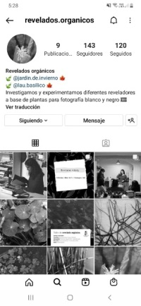

Experimentación e investigación de reveladores a base de plantas
para fotografía blanco y negro. En las fotos que aquí aparecen
utilizamos té negro, menta, orégano y café.
Podes acompañarnos en
¡
@revelados.organicos
